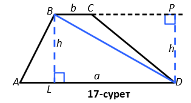

Трапеция ауданы
Трапеция деп қарама-қарсы екі қабырғасы параллельді, ал басқа екеуі параллельді емес төртбұрыштар аталады.
Трапецияның параллель қабырғалары оның табандары, ал параллель емес жақтары – бүйірлері деп аталады. Бүйір қабырғаларының ортасын қосатын кесінді орта сызық деп аталады.
Егер Трапецияның бүйір жақтары тең болса, тең бүйірлі деп аталады.
Бұрыштарының бірі тік бұрышты болса, онда ол тік бұрышты трапеция деп аталады.
Трапеция қасиеттері:
- трапецияның орта сызығы оның табандарына параллель және олардың жартысына тең;
- егер трапеция тең бүйірлі болса, онда оның диагональдары тең және табанындағы бұрыштары тең болады;
- егер табандарының өлшемі бүйір қабырғаларының өлшеміне тең болса, онда оған шеңбер сызуға болады.
Трапеция – дөңес төртбұрыштар. Сондықтан, олардың әрқайсысы диагональмен екі үшбұрышқа бөлінеді. Осы үшбұрыштардың аудандарының қосындысы бізге параллелограмм мен трапецияның ауданын береді.
2-теорема (трапецияның ауданы туралы). Трапецияның ауданы оның табандары қосындысының жартысы мен биіктігінің көбейтіндісіне тең.
Берілгені: ABCD – трапециясы,BC||AD (17-сурет); AD=a, BC=b, BL=h – трапецияның биіктігі.
Дәлелдеу керек: S(ABCD) = a + b⁄2*h
Дәлелдеуі. Трапецияның BD диагоналы оны екі үшбұрышқа бөледі – ABD және BCD. Бұдан, барлық трапецияның ауданы осы үшбұрыштардың аудандарының қосындысына тең. Осы әрбір үшбұрыштың ауданын табайық:
S(ABD) = 1⁄2ah, S(BCD) = 1⁄2bh
Онда, S=(ABCD) = S(ABD) + S(BCD) = 1⁄2ah + 1⁄2bh = (a + b) / 2 * h
Теорема дәлелденді.
Мысал. Теңбүйірлі трапецияның кіші табаны 3 см , қабырғасы 5 см , кіші табаны 3 см, биіктігі 3 см болатын теңбүйірлі трапецияның ауданын табыңыз.
AF2 = AB2 - BF2AF = √(25 - 9) = √16 = 4
ED=4 FD=4+4+3=11
SABCD = (BC + AD)/2 ∙ BF
SABCD = (3 + 11)/2 ∙ 3 = 21
Жауап: 21